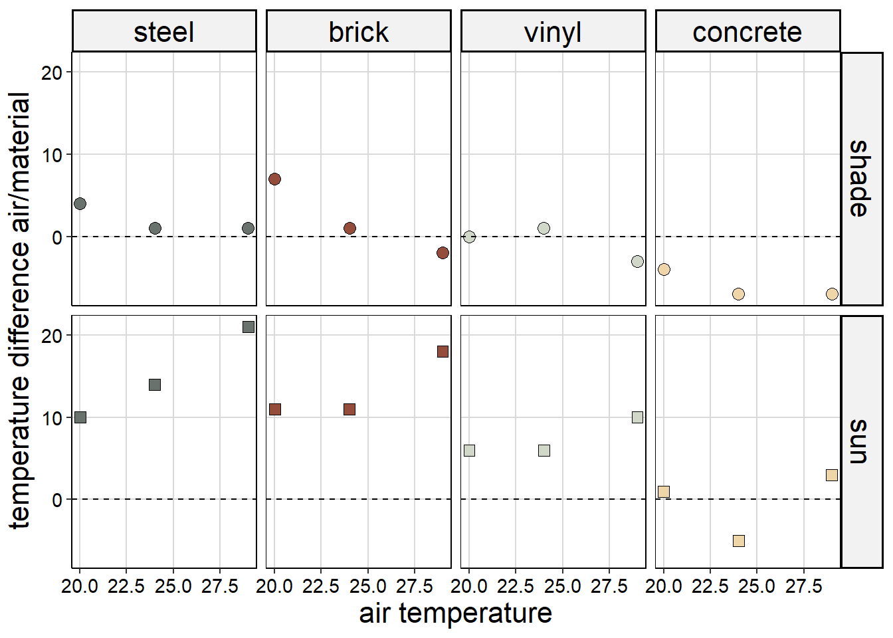
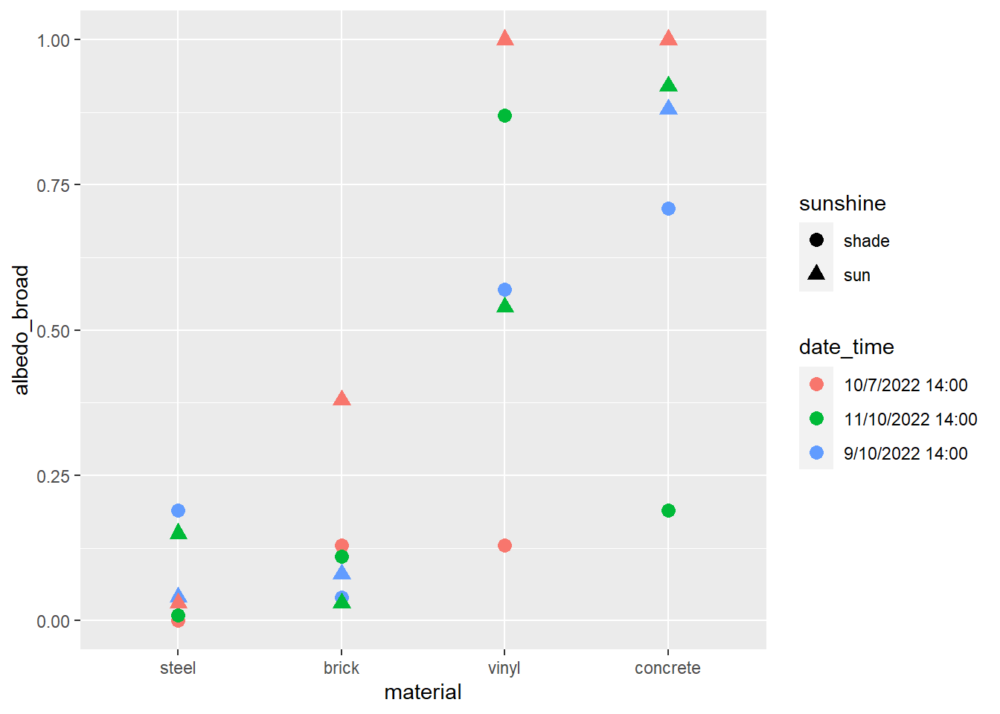
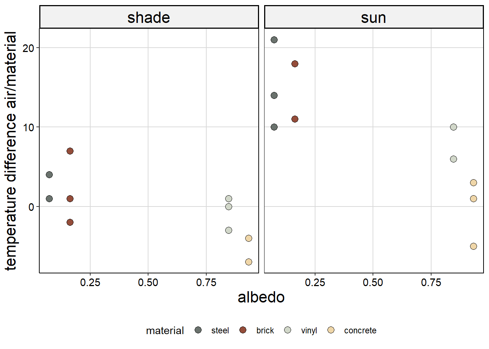

# load libraries
library(tidyverse)
library(knitr)
library(janitor)How does tree canopy presence and building material’s albedo influence the surface temperature of buildings made of those different materials?
Objective 1: Albedo
Albedo represents how reflective a surface is. This would impact the temperature of the material as more reflective surfaces are reflecting more energy. Measuring this will allow us to compare how shade impacts temperature as well as difference in temperature between different materials, and why they are occurring. We are creating 2 Albedo charts for each material type, one in the shade and one in the light. We recorded each of these 2 charts at 3 different times for each of the buildings for a total of 6 charts for each building. This repetition is to get information across a variety of temperatures.
Objective 2: Surface Temperature in reference to shade
The second objective is finding the relationship between the surface temperature of a material and whether that material is in shade or sun. This will allow us to determine if tree shading mitigates the increase in temperature and to what extent this relationship remains as the temperature reaches the extreme in either direction (hot or cold).
Objective 3: Ambient Temperature
Our third objective focuses on ambient temperature which we have received from the Manchester-Boston Airport. From each day of data collection we will determine the difference in temperature between shady and sunny sides of different building materials. Once we determine the difference in temperature we will compare it to the ambient temperature of that day. This will help us determine whether there is an association between ambient temperature and difference in surface temperature between shady and sunny sections.
Measure air temperature at each location Take albedo of area of building directly in the sunlight Take surface temperature of building directly in the sunlight Take albedo of area of building in shade of tree Take surface temperature of area of building in shade of tree
Let’s start by pulling in your data
albedo <- read_delim("data/albed_temps.csv", delim = ",") %>%
clean_names() %>%
separate(location, into = c("material", "sunshine"), sep = 1) %>%
mutate(material = case_when(material == "1" ~ "brick",
material == "2" ~ "vinyl",
material == "3" ~ "concrete",
material == "4" ~ "steel"),
sunshine = ifelse(sunshine == "A", "sun", "shade"))We need to calculate the difference between material temperature and airport temperature:
albedo <- albedo %>%
mutate(temp_diff = surface_temp_c - airport_air_temp_c)Now we can look at the relationship between temperature difference, ambient temperature and shady vs sunny for each of the materials used.
ggplot(albedo, aes(x = airport_air_temp_c, y = temp_diff,
shape = sunshine, color = sunshine)) +
geom_point(size = 3) +
geom_hline(yintercept = 0, linetype = "dashed") +
facet_grid(. ~ material)
Let’s look at albedo for each material and whether it differs when it measured in the sun or not.
ggplot(albedo, aes(x = material, y = albedo_broad, shape = date_time, color = sunshine)) +
geom_point(size = 3)
We are going to use the mean albedo measured in the sun for each day to compare.
mean_albedo <- albedo %>%
group_by(material, sunshine) %>%
summarize(albedo = mean(albedo_broad)) %>%
filter(sunshine == "sun") %>%
select(material, albedo)
albedo <- albedo %>%
left_join(mean_albedo)Now we can plot albedo vs temp difference
ggplot(albedo, aes(x = albedo, y = temp_diff, color = material)) +
geom_point(size = 3) +
facet_grid(. ~ sunshine)
► Question 78
Find at least three points for improvement/lessons learned about the study design itself (separate from what you learned about the process). Discuss this with your team members but you should write your own revisions in about 7-10 sentences.
► Question 79
Discuss with your team mates to identify new questions you have identified, how you might expand and refine the study (beyond just re-designing the pilot study), assume that you are not limited by the constraints of lab time within a course.
Page built: 2022-11-30 using R version 4.1.2 (2021-11-01)